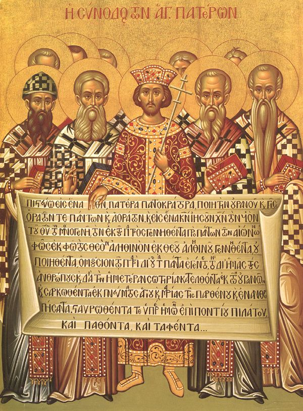

Early Church
Persecutions, martyrs, and the formation of doctrine.
The era of the early Church forged the identity of Christianity under pressure from persecution and cultural misunderstanding. Believers proclaimed Christ openly and, when necessary, sealed their confession with their blood. Their steadfastness impressed the surrounding world and drew many to the Gospel, often through the quiet witness of charity to the poor and the sick. In this crucible the basic structures of worship, leadership, and teaching took lasting shape.
Early Christians prayed the Psalms, read the apostolic writings, and gathered every Lord’s Day for the Eucharist. Over time the Church received the canon of the New Testament and summarized the rule of faith in creeds used at baptism. Monasticism arose as a radical expression of repentance and continual prayer, offering an example that strengthened the wider Church. These developments formed the spiritual DNA that Orthodoxy continues to live today.
Martyrs and Witness
Under Roman rule, Christians were sometimes accused of disloyalty because they refused to worship the emperor and the pagan gods. Many suffered imprisonment, exile, and death, yet their courageous forgiveness of persecutors revealed the power of Christ’s Resurrection. The stories of martyrs were read in the assemblies and commemorated annually, shaping the Church’s calendar and spirituality. Their example teaches that true victory comes through faithfulness and love, not coercion or violence.
Formation of the Canon and Creed
The Church received the Old Testament and gradually recognized the apostolic writings that make up the New Testament. Lists of authoritative books circulated alongside the liturgical use of the Gospels and Epistles in worship. Creeds emerged as concise summaries of the rule of faith professed at baptism and taught to catechumens. This shared canon and creed provided a common baseline for doctrine across the many local churches.
Worship and Community Life
From the beginning, the faithful assembled on the first day of the week to break bread and to hear the Scriptures. They cared for widows and orphans, collected alms, and practiced fasting as a school of love and self‑control. House churches evolved into dedicated spaces adorned with icons, and the structure of the Liturgy became more stable. Through prayer, repentance, and mutual service, the early Church embodied the life of the Kingdom in everyday practices.